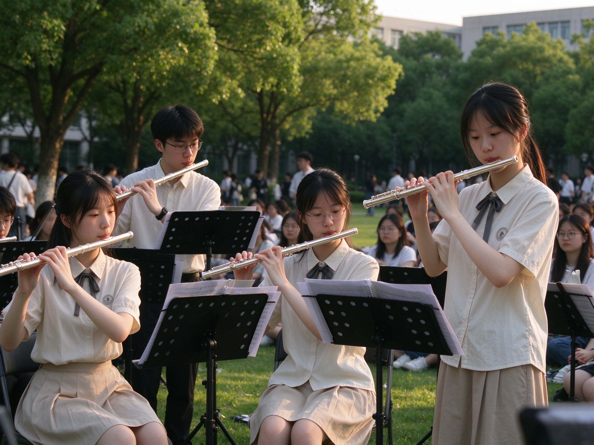

社团简介 | 活动安排 | 风采展示 | 社员故事 | 在线报名
风吟长笛社是一所以长笛艺术为核心的校园音乐社团，自成立以来，始终以“让每一缕呼吸都化作音符，让每一支长笛都成为伙伴”为理念，聚集了一批热爱长笛、热爱古典与现代音乐的在校学生。社团不仅是长笛学习者的交流平台，更是校园里传递音乐温度、推广管乐文化的重要阵地。
风吟长笛社最初由几名热爱长笛的在校学生自发组建，成立初期仅有不足十名成员，活动场地也仅限于学校走廊的角落和闲置教室。凭借成员们对长笛的热爱和坚持，社团逐步完善了组织架构，建立了系统的训练、演出和交流机制，从一个小型兴趣小组成长为覆盖多个年级、拥有完整培养体系的特色乐器社团。 如今，社团已拥有百余名注册成员，配备了专业的指导教师、标准化的练习场地和丰富的演出设备，先后获评校园“十佳社团”“文化建设先锋社团”等荣誉称号，成为校园管乐文化中不可或缺的一部分。
社团最鲜明的特色，是打破了“长笛学习只能一对一”的传统模式，构建了从零基础入门到专业进阶的完整培养路径。 零基础成员无需自备乐器，社团提供统一的公益练习长笛，由高年级骨干成员一对一带教，从持笛姿势、呼吸方法、基础音阶开始教学，让没有任何音乐基础的同学也能在一个月内吹出完整的简单曲目。 针对有基础的成员，社团开设重奏训练课，组建长笛二重奏、三重奏、长笛四重奏等不同形式的演奏小组，还会定期邀请本地交响乐团的长笛演奏家来校开展大师课，帮助成员打磨演奏技巧，理解作品背后的音乐内涵。 除此之外，社团还拥有专属的“长笛图书馆”，收藏了数百本不同难度的长笛曲集、演奏理论书籍和经典演出视频资料，成员可以免费借阅，自主安排练习计划
风吟长笛社始终坚持走出社团小圈子，把长笛音乐带给更多校园里的师生。 社团常年参与学校的开学典礼、毕业典礼、迎新晚会等重大活动的演出，还打造了“走廊音乐角”项目：成员们利用课间和午休的碎片时间，在教学楼大厅演奏轻柔的长笛曲目，为忙碌学习的师生送去片刻放松的音乐时刻。 同时，社团也积极和周边高校的管乐社团、本地青少年交响乐团开展交流活动，联合举办跨校长笛音乐节，让成员有机会和不同背景的长笛爱好者同台演奏、互相学习，拓宽音乐视野。 多年来，风吟长笛社见证了数百名成员的音乐成长：有人从完全不会识谱的新手，一步步成长为可以登台演出的长笛手；有人在社团里找到了志同道合的挚友，一起排练、一起参赛、一起分享音乐带来的快乐。这里不追求所有人都成为专业演奏家，只希望每一个拿起长笛的人，都能在呼出的每一缕气息里，找到属于自己的音乐表达，让长笛清亮温暖的音色，成为青春里一段难忘的美好记忆。 返回顶部
本学期风吟长笛社围绕“零基础入门、进阶打磨、重奏协作、舞台实践”规划了全周期活动，新老社员都能找到适配的参与内容。 每周开设两次固定活动：一次零基础入门小课堂，手把手教持笛、呼吸与识谱；一次进阶重奏合训，分声部打磨合奏作品。练习室每日傍晚开放，提供公用长笛与骨干社员答疑。 每月设湖畔草坪长笛小聚、长笛主题沙龙，每两月办一次乐谱交换市集。学期内安排新生展演、跨校管乐交流，期末举办“风吟之声”专场汇报演出，还会组织参与校园各类文艺活动，不定期邀请专业演奏家来校开大师课。 所有活动具体时间将根据学校统一安排微调，详情请大家关注社团后续通知。
| 风吟长笛社 2026 年春季学期活动安排表 | |||
|---|---|---|---|
| 活动名称 | 活动时间 | 活动地点 | 负责人 |
| 新成员见面会 | 3 月第 2 周 周五晚 | 学生活动中心 音乐教室 201 | 张强 |
| 长笛基础教学公开课 | 3 月第 3 周 周六下午 | 李娜 | |
| 校园草地表演会 | 4 月第 2 周 周日 | 操场东侧草坪 | 王浩 |
| 期末专场音乐会 | 6 月第 1 周 周六晚 | 大学生活动中心 大礼堂 | 刘芳 |
上面列出的只是本学期的代表性重点活动，风吟长笛社的日常里，还藏着很多灵活又松弛的音乐小场景：下课后临时凑起的走廊即兴合奏、练琴间隙围着谱架聊技巧的经验分享会、突发奇想就带着长笛去操场边吹晚风的小型局，这些没有提前排进日程的细碎音乐时刻，才是社团里最鲜活的日常。
我们完全不把活动局限在提前定好的框架里，特别欢迎所有有想法、有创意的同学参与策划：不管你想办一个主题影视长笛配乐小聚、想发起一次老社员带新社员的“一对一陪练计划”，甚至只是想组织一场只吹冷门小众曲目的趣味演奏会，都可以随时找社团的核心骨干提出你的方案。社团会全力帮你协调场地、准备物料、招募同好，把你脑子里关于长笛的新奇想法，变成大家一起参与的真实活动。
下面是一张往届校园音乐会的照片示意。点击图片，可以查看更详细的活动介绍页面。

这张照片定格的，正是上学期“夏日之声”校园音乐会上，风吟长笛社成员登台集体演出的珍贵瞬间。舞台暖光落在银亮的长笛管身上，十余位社员站定在各自声部的位置，指尖按在音孔上，气息平稳地吹出整齐清亮的旋律，台下的掌声和晚风裹在一起，成了那个夏天最难忘的音乐记忆。 平日里在练习室反复打磨的长音、一遍遍合练调整的声部衔接，那些课后留在社团练习的傍晚、为了抠准一个重奏段落反复排练的周末，所有细碎的训练与打磨，最终都会在正式演出的舞台上得到充分的展示机会，让每一份对长笛的热爱，都能变成被听见的旋律。
小杨大一报名风吟长笛社时，心里满是忐忑。她完全没有任何吹奏基础，甚至分不清长笛的构造，连长笛的正确持姿、口型发力都一无所知；第一次试吹时，她对着笛头反复调整了十几分钟，才能勉强吹出几声断断续续的气音，连一个稳定清晰的单音都发不出来，当时她甚至担心自己零基础的水平跟不上社团节奏，迟迟不敢填报名表。
在社团学长学姐的耐心引导下，她慢慢放下了顾虑。学长学姐从最基础的持笛手势、口型控制、腹式气息练习开始教起，一点点帮她纠正手型的角度、嘴唇的贴合位置，教她怎么稳住气息不发颤，陪着她逐个攻克基础指法与长音稳定性的入门难关。遇到她总练不好的高音换指，学长学姐会一遍遍放慢速度示范，拆解发力的技巧，从来不会因为进度慢而有丝毫不耐烦。
一个学期之后，曾经连笛头都吹不响的她，已经能够流畅吹奏《茉莉花》《天空之城》等多首经典曲目，气息稳定、指法娴熟。在社团的新年音乐会上，她抱着紧张又期待的心情登上舞台，完成了自己的首次长笛独奏表演。当最后一个音符落下、台下响起掌声的那一刻，她知道这一学期所有的坚持与付出，都有了最值得的答案。
小王是个性格偏内向的同学，从前很少在公众面前展示自己，连在熟人面前吹奏乐器都会感到紧张局促。 加入风吟长笛社后，大家一起排练曲目、交流指法、打磨细节，轻松包容的社团氛围让他慢慢卸下防备，逐渐习惯在同伴面前从容演奏。 在一次社团小型汇报展演中，他鼓起勇气登台，完整吹奏了一首自己练习已久的长笛独奏曲。 演出结束时台下响起了热烈的掌声，他不仅收获了大家的认可，也找到了当众展示自己的底气与自信。
很多社员都坦言，加入风吟长笛社最大的收获远不止是掌握了长笛的吹奏技巧，更是结识了一群因音乐相聚、志同道合的伙伴。 大家会凑在一起交流不同曲目的吹奏心得，互相推荐喜欢的长笛演奏家与经典曲目，分享打磨指法、控制气息的小技巧；课后相约泡在社团琴房，一起练长音、抠吐音细节，从单音练习到重奏、合奏，彼此配合、互相指正，把枯燥的基本功练习变得有滋有味。 遇上演出筹备期，大家一起熬夜改编曲、合排曲目，解决舞台上的突发状况；闲暇时也会约着一起去听线下音乐会、参加户外音乐快闪，在忙碌的课业生活之外，拥有了一份专属的轻松与陪伴，也让大学时光多了一份踏实的归属感。
如果你也喜爱音乐，沉醉于长笛清亮悠扬的笛声，期待在大学时光里拥有一段与长笛相伴的鲜活回忆，那么欢迎你加入风吟长笛社。 无论你是从未接触过长笛的零基础新手，还是已经有一定吹奏基础的器乐爱好者，都能在这里找到属于自己的位置。我们会陪你从持笛姿势、基础识谱一步步入门，也会和你一起打磨曲目、奔赴大大小小的舞台；你可以在这里结识志同道合的伙伴，在日常排练、户外展演、专场演出中收获演奏技能的成长，也收获并肩同行的温暖与归属感。 让我们一同以笛为契，以乐传声，在悠长的笛声里，演奏出独属于我们的青春旋律。
请认真填写以下信息，确保联系方式准确无误。 提交后，社团会通过电话或短信的方式通知面谈或试音时间。
提交表单后，如需修改信息，可以再次填写并提交最新的一份。
校园长笛社 · 2025 招新示例网页